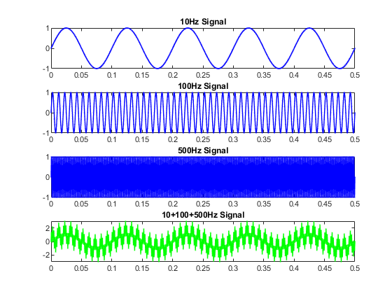

clc;
close all;
clear;
workspace;
format long g
format compact
fontSize = 2;
t = 0 : 1/2000: 0.5;
f1 = 10;
T1 = 1/f1;
amp1 = 1;
f2 = 100;
T2 = 1/f2;
amp2 = 1;
f3 = 500;
T3 = 1/f3;
amp3 = 1;
signal1 = amp1 * sin(2*pi*t/T1);
signal2 = amp2 * sin(2*pi*t/T2);
signal3 = amp3 * sin(2*pi*t/T3);
signal = signal1 + signal2 + signal3;
subplot(4,1,1);
plot(t, signal1, 'b.-', 'LineWidth', 1, 'MarkerSize',1);
title('10Hz Signal');
subplot(4,1,2);
plot(t, signal2, 'b.-', 'LineWidth', 1, 'MarkerSize',1);
title('100Hz Signal');
subplot(4,1,3);
plot(t, signal3, 'b.-', 'LineWidth', 1, 'MarkerSize',1);
title('500Hz Signal');
subplot(4,1,4);
plot(t, signal, 'g.-', 'LineWidth', 1, 'MarkerSize',1);
title('10+100+500Hz Signal');
